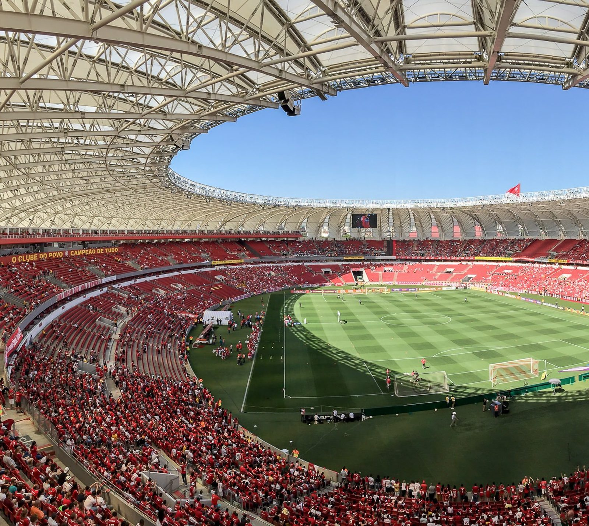

Desde 4 de abril de 1909
O Clube
O Clube
do Povo
Nasceu aberto a todos, sem distinção de raça, classe ou origem. Mais de um século depois, segue pintando Porto Alegre de vermelho.
1Mundial de Clubes
2Libertadores
3Brasileiros
1Sul-Americana
Campeão do mundo 2006
Brasileiro invicto 1979
Libertadores 2006 · 2010
Fundação · 1909
Feito para
Feito para
todo mundo
Três irmãos paulistas recém-chegados a Porto Alegre, Henrique, José Eduardo e Luiz Poppe, fundaram o Sport Club Internacional numa época em que o futebol da capital gaúcha pertencia a clubes elitistas e colônias de imigrantes.
A proposta era outra: um clube democrático, aberto a qualquer pessoa. Foi daí que veio o apelido que atravessa gerações.
Vermelho e branco desde a primeira reunião.

Sala de troféus
Campeão
Campeão
de tudo
Do tricampeonato brasileiro nos anos 70 ao topo do mundo em 2006, as conquistas que definem a história colorada.
2010 Duas vezes rei do continente.
1976
1979 O de 1979 sem nenhuma derrota.
Feito único
O Brasileiro invicto
Primeiro clube a vencer o Campeonato Brasileiro sem perder uma partida, uma marca que ninguém igualou no formato tradicional da competição.
Linha do tempo
Mais de um século
Mais de um século
de vermelho
- 1909Fundação pelos irmãos Poppe
- 1969Inauguração do Beira-Rio
- 1975Primeiro título brasileiro
- 1976Bicampeão brasileiro
- 1979Tri, e invicto
- 2006Libertadores e Mundial
- 2008Copa Sul-Americana
- 2010Bicampeão da América
A casa colorada
Gigante da
Gigante da
Beira-Rio
Inaugurado em 1969 às margens do Guaíba, o estádio é o templo do clube e palco das maiores noites da história colorada.
Conte sua história no estádioEntre para a
nação colorada
Receba histórias, curiosidades e memórias de torcedor direto no seu e-mail.